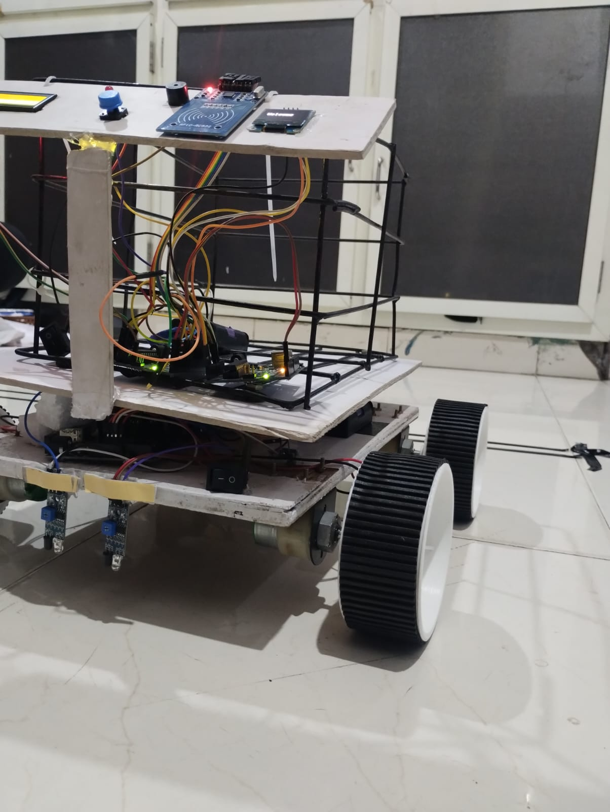
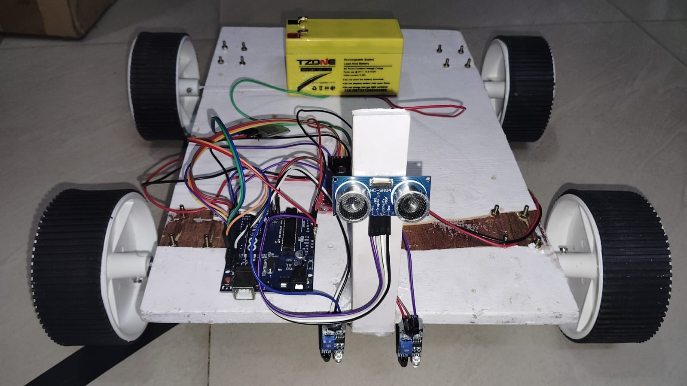
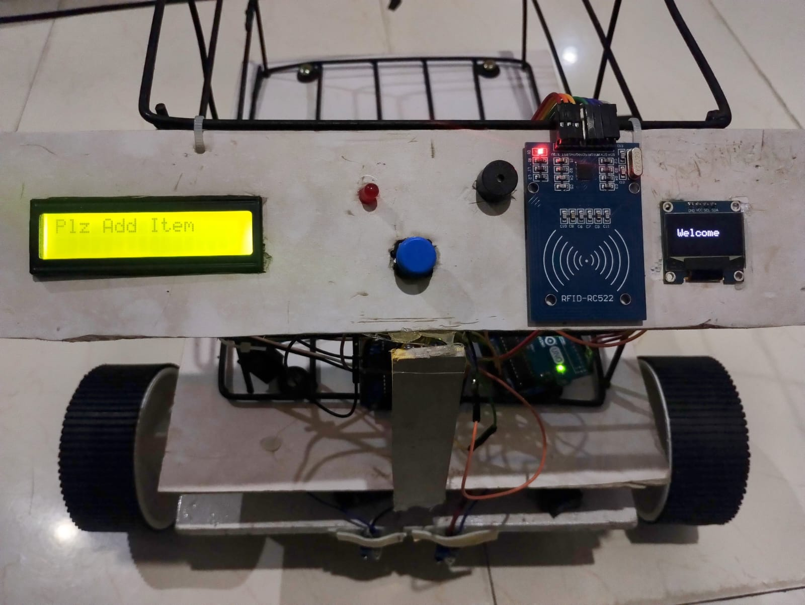
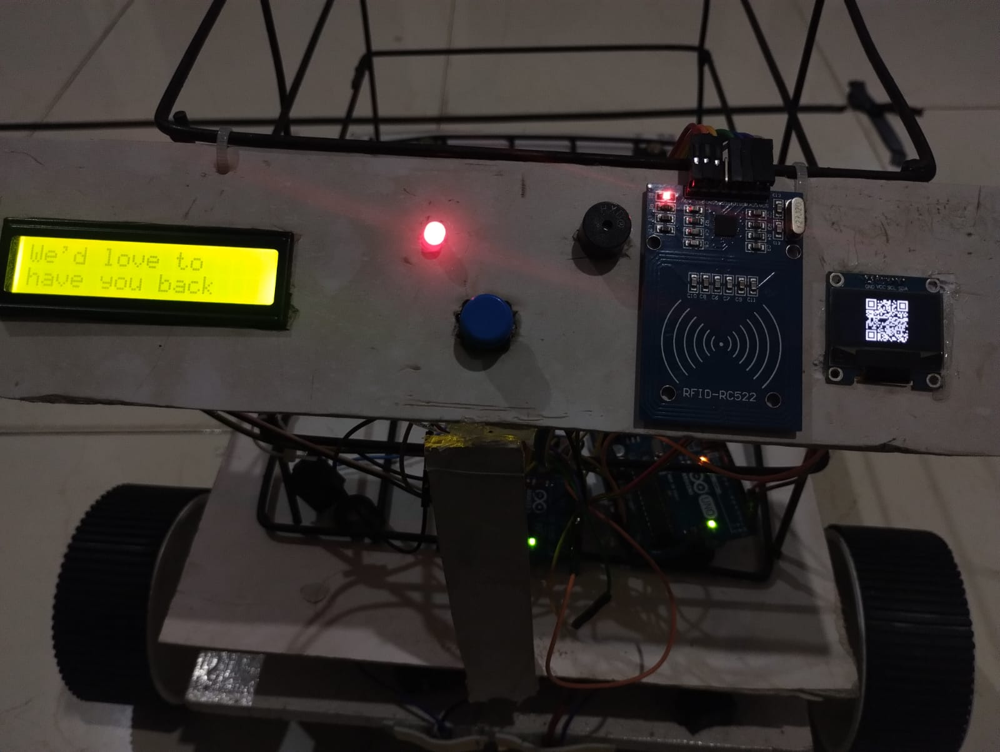
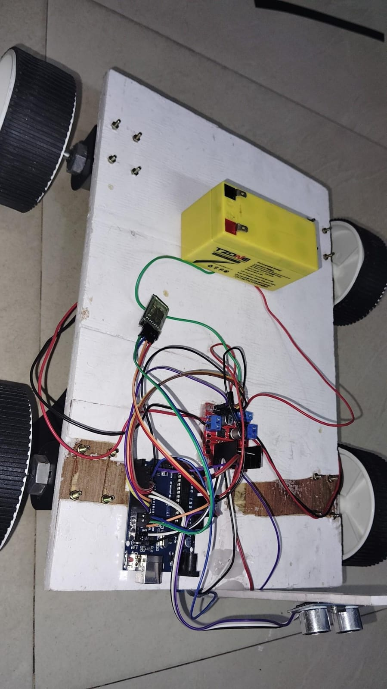

Build, layout and hardware evidence.
The supplied project documentation describes an Arduino Uno centered system using RFID, HC-05 Bluetooth, IR sensors, L298N motor control and LCD/OLED feedback. The documented prototype also includes QR-based payment generation.
Every image supplied for this project is included below. Click an image to inspect it at full size.




